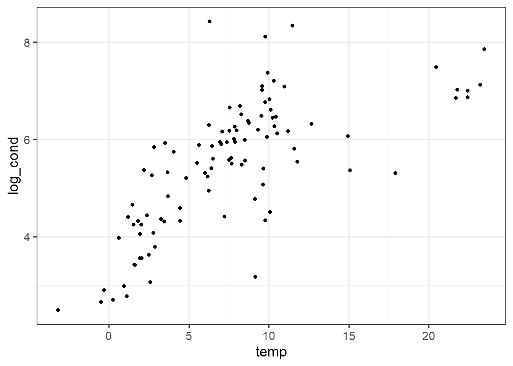

Warning: package 'tidyverse' was built under R version 4.4.1
Warning: package 'ggplot2' was built under R version 4.4.2
Warning: package 'tibble' was built under R version 4.4.1
Warning: package 'tidyr' was built under R version 4.4.1
Warning: package 'readr' was built under R version 4.4.1
Warning: package 'purrr' was built under R version 4.4.1
Warning: package 'dplyr' was built under R version 4.4.1
Warning: package 'stringr' was built under R version 4.4.1
Warning: package 'forcats' was built under R version 4.4.1
Warning: package 'lubridate' was built under R version 4.4.1
library(knitr)
Warning: package 'knitr' was built under R version 4.4.1
5.1 The Linear Model Formulation and Assumptions
ggplot(lake, aes(x = temp, y = log_cond)) +geom_point() +theme_bw(base_size =14)

Figure 5.1: A scatter plot of temperature versus log conductivity in the lake data.
5.2 Parameter Estimation
Our goal is to find the best fitting line between temperature and log-conductivity (Figure 5.1). But unfortunately, there are an infinite number of possible lines though these data, so how do we know which is best? Well, we could pick a few potential intercept and slope values and plot them, seeing which one appears to fit best.
Figure 5.2: A scatter plot of temperature versus log conductivity in the lake data with linear regression lines for various intercept and slope parameter combinations.
A few of these lines “feel” unreasonable. Log conductivity appears to increase linearly with temperature, suggesting a positive slope. The orange line has a negative slope and the pink line has no slope, so likely these aren’t the best lines for the data. The blue line seems closer to most of the data points than the green line, so intuition suggests the blue line is the best of the four. But it would be helpful to have some empirical evidence suggesting superior performance of the blue line.
One way to measure the fit of a line is to calculate the sum of the squared errors (SSE) between the line and each point. A more accurate model has smaller errors, and hence a smaller SSE.